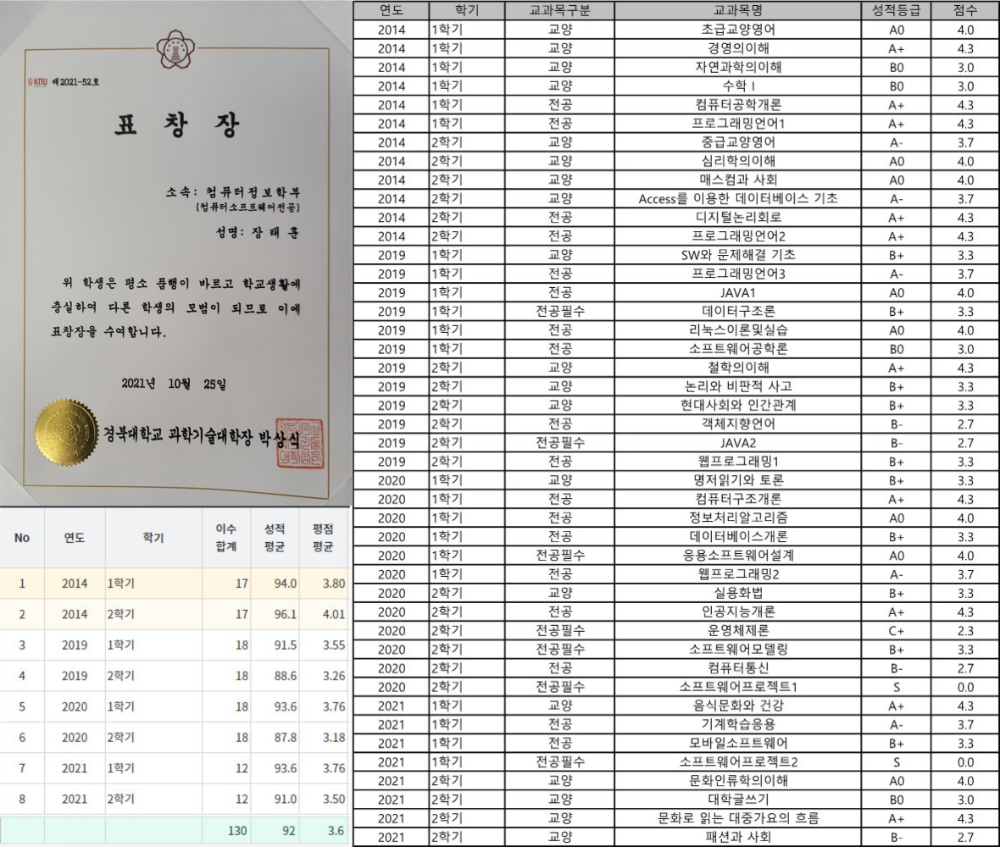
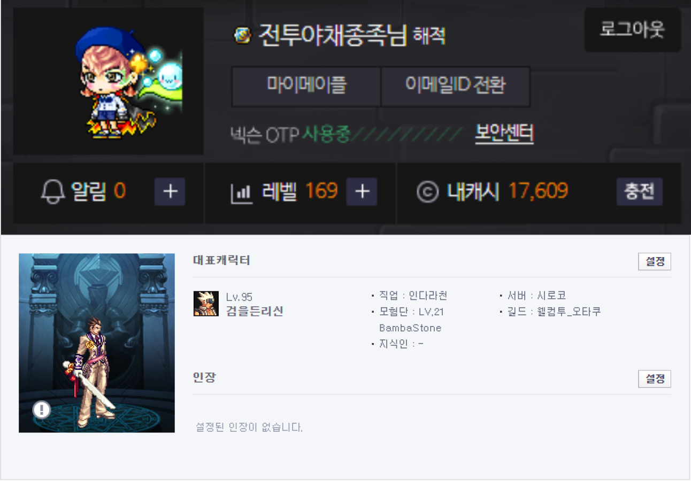
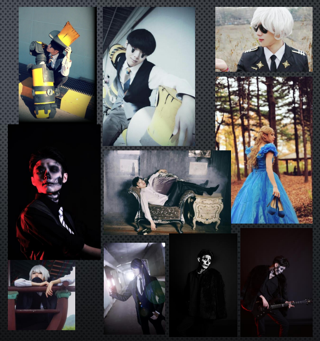

-
Contact
Name : 장태훈
Nickname : BambaStone
Phone : 010-5760-4245
Email : jth7296@gmail.com
SNS : instagram
-
Skill 사용가능기술
C, C++ , C#
mySQL을 이용한 데이터베이스 사용 기초
JAVA 기초
python 기초
CSS,html
javaScript
-
Education 학력
SBS아카데미 컴퓨터아트학원 프론트엔드 개발자 양성과정
국가의 지원으로 개설된 산업현장에서 요구되는 실무역량 중심 훈련과정의 개발자 양성프로그램.
경북대학교 컴퓨터정보학부 소프트웨어 전공 졸업
학점 : 3.6/4.3

울산애니원고등학교 컴퓨터게임개발과
영상문화 산업(게임,만화,애니메이션)에 관련된 전문인 양성을 목적으로 한 특성화 고등학교.
단순히 전문지식을 배우는데 그치지 않고 수행평가나 졸업작품을 팀 단위로 진행하여서 직접적인 팀 활동을 통해 전문지식의 활용법을 배울 수 있다.
-
self-introduction
-
다양한 사회경험
편의점 알바, 대형 마트의 물류담당 과 같은 단순알바도 해보고,
웨스턴펍의 홀서버 로서 외국인들을 포함한 여러 손님들과 마주치면서 다양한 시야를 터득했고,
건설현장의 작업반장으로도 일하며 팀으로서의 작업을 위한 방향성을 배우기도 하였습니다.
이러한 다양한 업종에서 다양한 사람들을 마주치며 다양한 경험과 시야를 터득했습니다.

-
다양한 게임경험
국내 게임으로는 던파, 사이퍼즈, 메이플 등 안해본 게임이 없습니다.
해외 게임도 매우 다양하게 즐기는 편입니다.
스팀에서도 라이브러리에 161개의 게임이 있을 정도로 게임을 좋아하는 편입니다.
귀사에 입사시 이러한 게이머의 시선을 바탕으로 좀더 유저들이 바라는 바를 생각하며 작업을 진행할수 있으리라 생각합니다.
 -
서브컬쳐에 대한 경험
어렸을 때 부터 게임과 만화, 애니메이션 같은 서브컬쳐 문화에 대한 관심이 많았고, 그로인해 고등학교도 관련된 학교로 들어갈 정도로 열정적이였습니다.
그로인해 다양한 서브컬쳐를 즐기는 사람들과 인맥이 형성되었고, 코스프레와 같은 좀더 다양한 활동들을 해볼수 있었습니다.
자연스럽게 서브컬쳐에 대해 심도있고 다양한 시각을 가질수 있게 되었습니다.
이러한 서브컬쳐에 대한 시각과 지식으로 좀더 유저 친화적인 작업을 할수 있을것이라 생각합니다.
 -
종합적인 강점
고등학교 때 부터 겪어온 팀 단위 작업과 다양한 사회경험, 그리고 대학에서 배운 전문적인 지식을 통해 어떤 작업이든 빠르게 습득하고 수월하게 해낼수 있습니다.
대학생활의 성실함을 통해 저의 성실함을 증명하였습니다.
다양한 게임경험과 서브컬쳐에 대한 경험과 시야가 귀사의 작업에 도움이 될것이라 생각합니다.